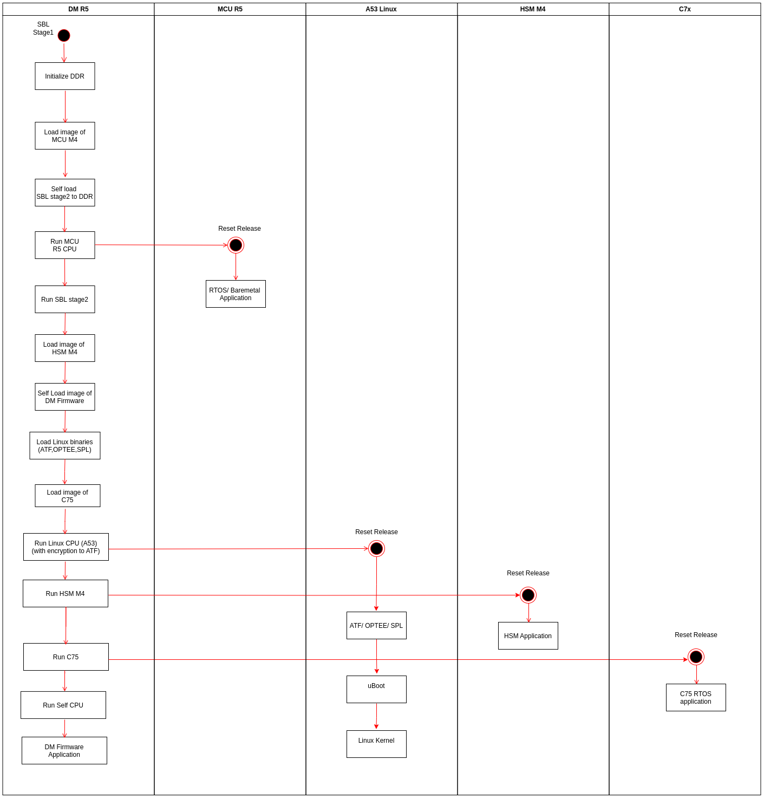

Introduction
- SBL booting Linux (SBL OSPI NAND Linux Multistage) is a secondary bootloader application that boots Linux on A53 core and RTOS/NORTOS application on R5, MCU-R5 and C75 cores.
- The bootloader makes use of 7 appimages
- A Linux appimage containing the Linux binaries (ATF, OPTEE, A53 SPL).
- tiboot3.bin with SBL stage1, TIFS, BoardConfig
- Appimage for SBL stage2
- Appimage for MCU R5
- Appimage for HSM M4
- Appimage for C75
- DM firmware appimage for DM R5
- Boots R5F, MCU-R5, HSM-M4, C75 cores and Linux on A53 from OSPI.
- SBL booting Linux can be used when early booting of R5F, HSM-M4, C75 and MCU-R5 cores are required. When using uBoot, the application will start running on R5F, HSM-M4, C75 and MCU-R5 cores only after booting Linux
- The Linux appimage can be generated by using Linux Appimage Generator Tool
- The appimages will be flashed to the offset specified by SysCfg, the SBL parses the appimages from these locations, loads and run the cores.
Bootflow for SBL booting linux from OSPI
- Note
- The binaries for R5F, M4F, C75 cores need not be in the linux root partition
(root/lib/firmware), when SBL is booting Linux.
- The bootflow for SBL booting Linux is as follows

Bootflow for multi-stage SBL booting Linux
OSPI memory layout for SBL booting Linux from OSPI
- Note
- The flash address RF5, MCU-R5F, C75, HSM-M4 and Linux appimages can be configured using Syscfg
0x0 +----------------------------+
| tiboot3.bin |
| (SBL stage1,TIFS,boardcfg) |
| |
0x80000 +----------------------------+
| SBL Stage2 |
| |
0xC0000 +----------------------------+
| DM App Image |
| |
0x240000 +----------------------------+
| HSM App Image |
| |
0x280000 +----------------------------+
| ospi.u-boot(4m) |
| |
0x800000 +----------------------------+
| MCU R5 App Image |
| |
0xA00000 +----------------------------+
| C75 App Image |
| |
0x1200000 +----------------------------+
| Linux App Image |
| |
+----------------------------+
SD card Partitioning
- Note
- The default SD card image for AM62Ax-evm can be used to boot Linux using SBL
-
The tiboot3.bin, tispl.bin, u-boot.img will not be used for booting Linux when using SBL booting Linux.
-
U-boot needs to be flashed at the flash device only.
-
The R5 binaries in the root partition (eg :
root/lib/firmware/am62a-mcu-r5f0_0-fw) will not be used when SBL boots Linux and R5 cores.
The default Linux SD card image for am62ax-sk has two partitons. No files from boot partition will be used while booting from OSPI flash device.
- A FAT partition (boot) contatining
- tiboot3.bin
- tispl.bin
- u-boot.img
- uboot.env
- A ext4 partition (root) containing
- Linux Kernel image
- Linux DTB
- Linux file system
See Also
 1.8.20
1.8.20